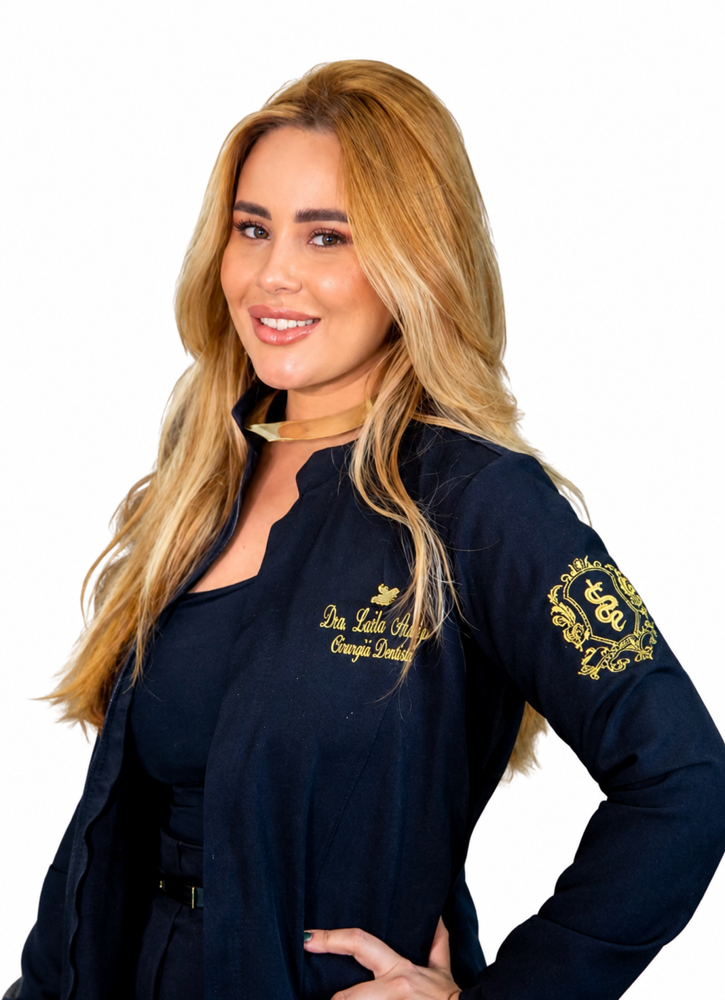
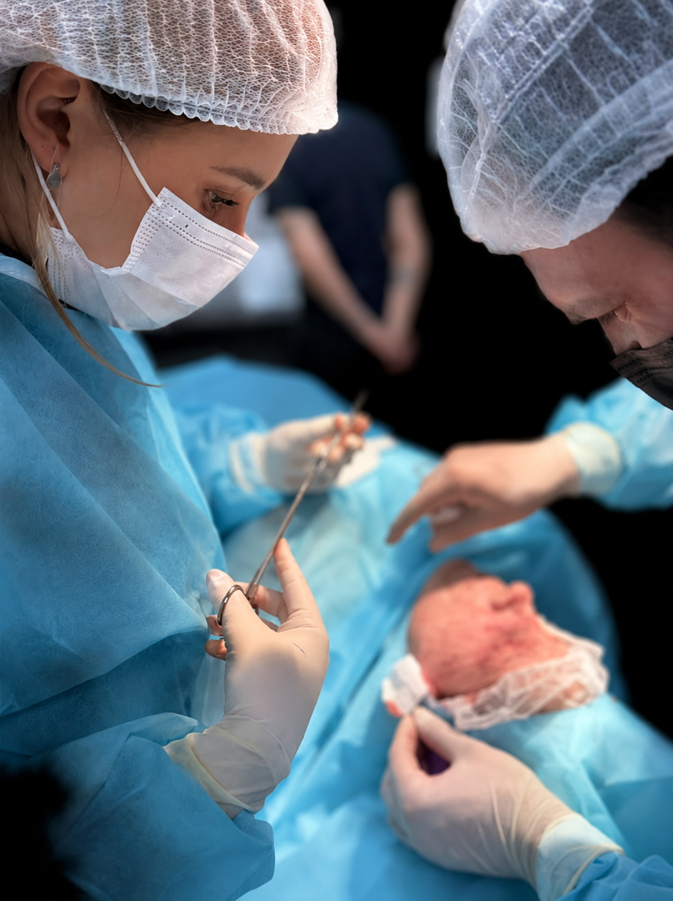
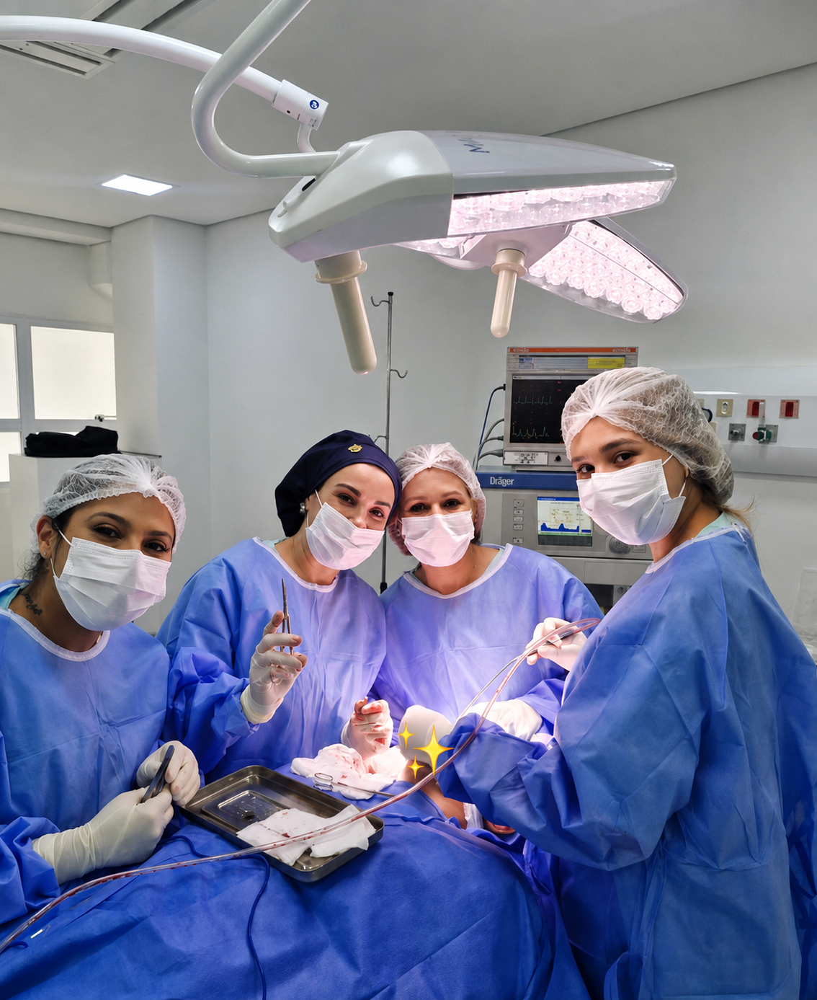
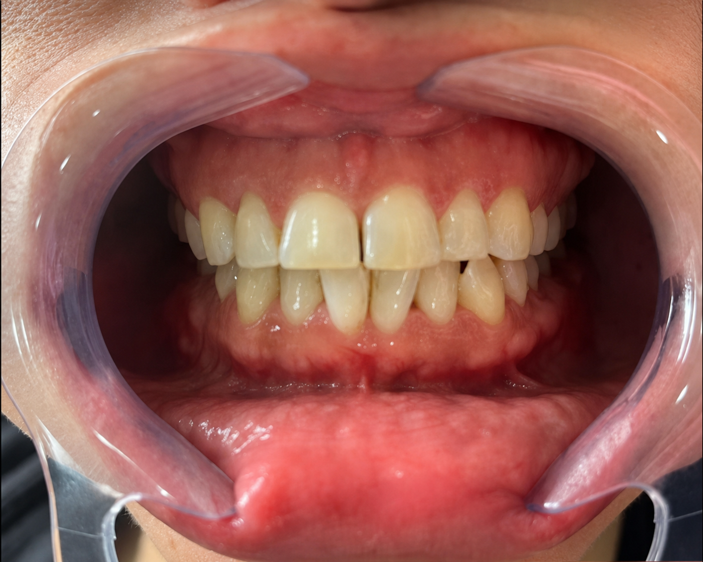
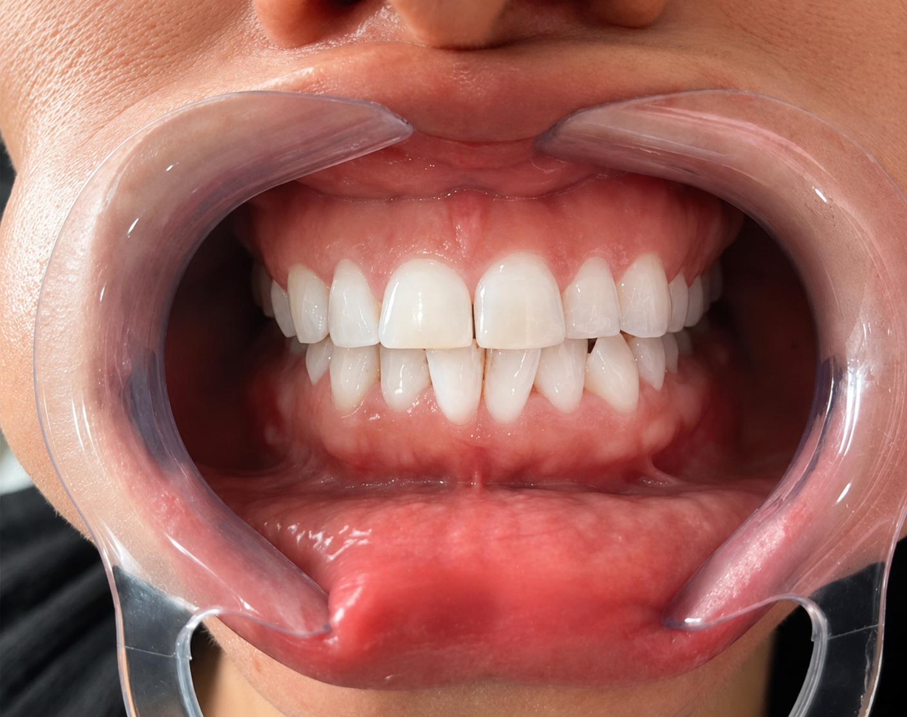

Clareamento dental
Opções de clareamento indicadas após avaliação das condições e necessidades de cada paciente.
Cirurgiã-Dentista · CRO-SP 174666
Atendimento em Clínica Geral, com avaliação individualizada e orientação clara em cada etapa do cuidado.



Sobre a profissional
Cirurgiã-dentista com atuação em Clínica Geral e pós-graduanda em Bucomaxilofacial. Oferece atendimento odontológico orientado por avaliação individual, comunicação clara e planejamento de acordo com as necessidades de cada paciente.
Clínica Geral, com cuidados preventivos, restauradores, funcionais e estéticos.
Pós-graduanda em Bucomaxilofacial.
Avaliação cuidadosa, explicações acessíveis e definição do tratamento conforme cada caso.
Tratamentos
Opções de clareamento indicadas após avaliação das condições e necessidades de cada paciente.
Cuidado voltado ao tratamento da parte interna do dente, quando houver indicação clínica.
Avaliação e remoção de terceiros molares conforme a necessidade e as condições de cada caso.
Avaliação de sinais e sintomas relacionados à articulação temporomandibular e às estruturas associadas.
Planejamento para alinhamento dentário com dispositivos removíveis, quando indicados após avaliação.
Procedimentos restauradores voltados à recuperação da forma, da função e da estética dos dentes.
Procedimentos indicados de forma individualizada, considerando o equilíbrio entre face e sorriso.
Cuidado odontológico
Espaço para compreender suas necessidades e esclarecer as etapas do atendimento.
Cada indicação parte da avaliação das condições e dos objetivos de cada paciente.
Aperfeiçoamento profissional contínuo por meio da pós-graduação.
As possibilidades de tratamento são apresentadas conforme a avaliação clínica.
Diferentes procedimentos reunidos para atender necessidades de saúde, função e estética.
Resultados clínicos


CLAREAMENTO
[INSERIR PROCEDIMENTO REAL]
[INSERIR PROCEDIMENTO REAL]
Relatos de pacientes
Dra. Laila foi top de mais! Me deixou super à vontade e fez tudo com muito cuidado. Saí da consulta muito satisfeito. Recomendo demais! 👏👏👏
Atendimento acolhedor, fui muito bem atendido pela Dra Laila Araujo, voltarei mais vezes
Além de uma excelente profissional, é uma pessoa que realmente se preocupa com o bem-estar dos pacientes. Muito cuidadosa, detalhista e comprometida com a qualidade do atendimento.
Como funciona
Entre em contato pelo canal de atendimento que será informado nesta página.
Avaliação clínica para compreender suas necessidades.
Definição da conduta adequada após a avaliação profissional.
Orientações e retornos definidos de acordo com o tratamento.
Dúvidas frequentes
A indicação depende de avaliação clínica. Durante a consulta, a profissional analisa as necessidades do paciente e explica as possibilidades de cuidado.
O tempo varia conforme o procedimento e as condições de cada caso. Uma estimativa pode ser apresentada após a avaliação.
A necessidade de extração deve ser analisada individualmente, considerando o exame clínico e, quando necessário, exames de imagem.
A frequência depende das condições de saúde bucal e do procedimento realizado. A orientação é definida de forma individual após o atendimento.
[INSERIR INFORMAÇÃO REAL SOBRE ATENDIMENTO DE URGÊNCIA]
Vamos começar
Consulte abaixo os canais de atendimento. O agendamento será disponibilizado assim que os dados de contato forem informados.
Agendar pelo WhatsApp